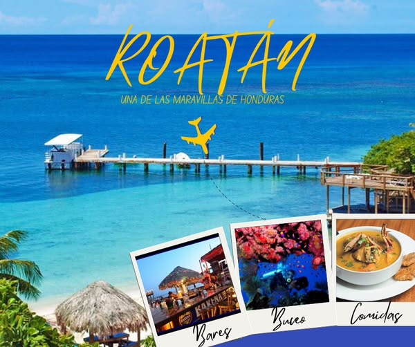

Roatan es una isla ubicada en el Caribe, conocida por sus hermosas costas y su rica biodiversidad marina. Es un destino turistico popular para aquellos que buscan disfrutar de playas de arena blanca, aguas cristalinas y una variedad de actividades acuáticas como el buceo y el snorkel. Ademas, Roatan ofrece una mezcla de cultura local, con su gente amigable y su vibrante escena gastronómica, lo que la convierte en un lugar ideal para unas vacaciones inolvidables.

Roatan se encuentra en el Caribe, a unos 65 kilómetros al norte de la costa de Honduras.